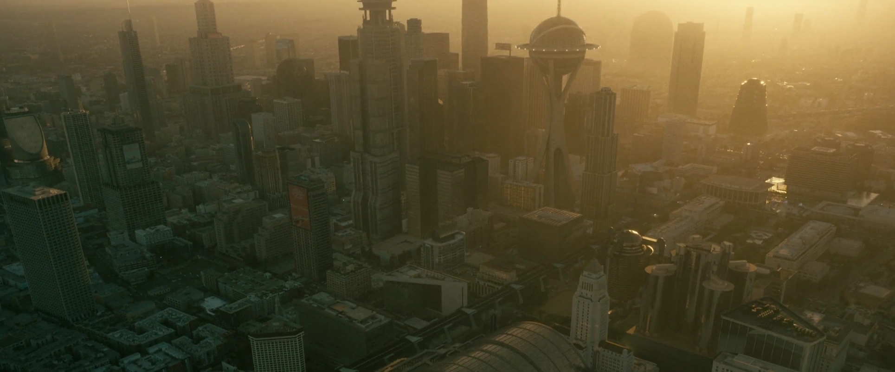

ロサンゼルス市庁舎
TVシリーズ ロケーション
LOCATION DATA

Los Angeles City Hall is a location in Los Angeles, California {{in|FOTV}}.
Background
Prior to the Great War, Los Angeles City Hall acted as the center of government for the city of Los Angeles, California. In the late 2070s, the city hall was the site of a union protest against RobCo Industries during the automation riots.Appearances
Los Angeles City Hall appears in the Fallout TV series. {{FOTV appearances|9=201}}Behind the scenes
Los Angeles City Hall is based on the real-world Los Angeles City Hall, which was constructed in 1928. Apart from the large structure at the back, Los Angeles City Hall appears largely the same.Gallery
References
{{References}}Category:Fallout TV series locations
Impression
（準備中）
（準備中）